Esri · MOOC
Make an Impact with Modern Geo Apps
Completed May 11, 2025 · 4 weeks
Short courses, specialist training, international programmes and hands-on learning that have shaped my geospatial and visual practice.
Completed May 11, 2025 · 4 weeks
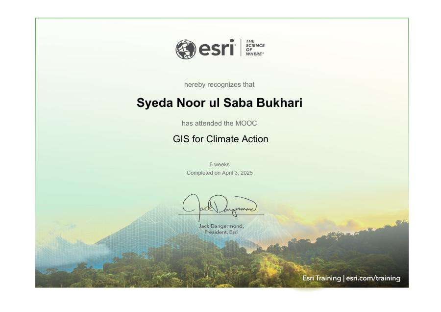
Completed April 3, 2025 · 6 weeks
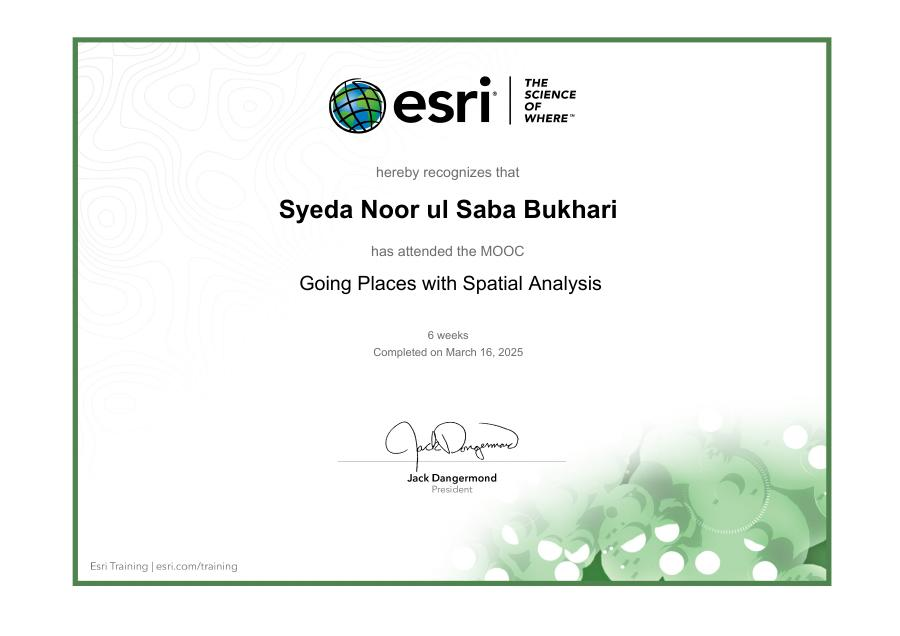
Completed March 16, 2025 · 6 weeks
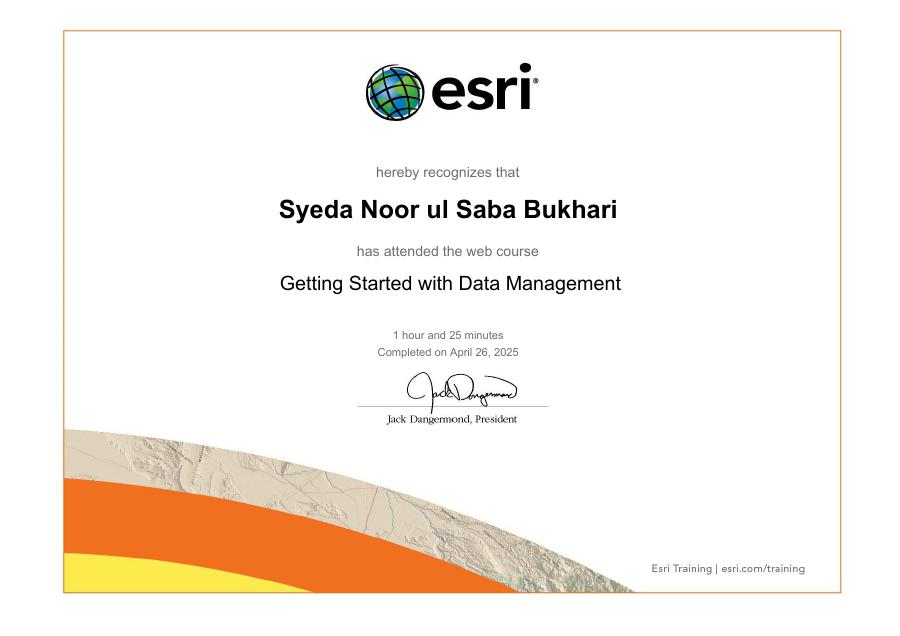
Completed April 26, 2025 · 1 hour 25 minutes
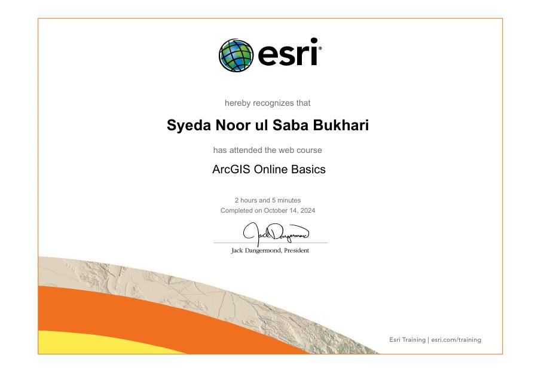
Completed October 14, 2024 · 2 hours 5 minutes
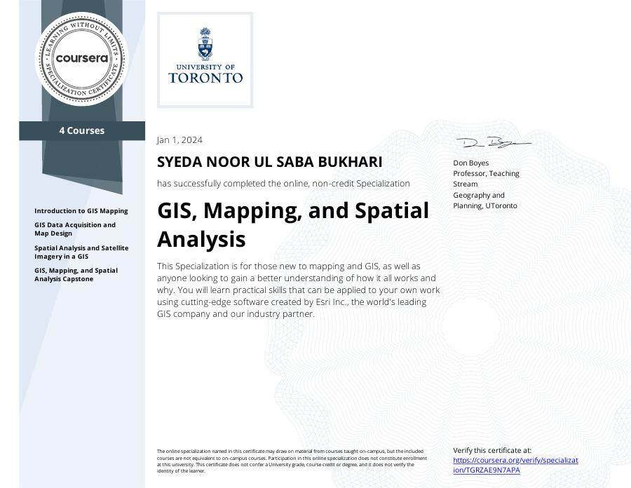
Completed January 1, 2024 · 4-course specialization
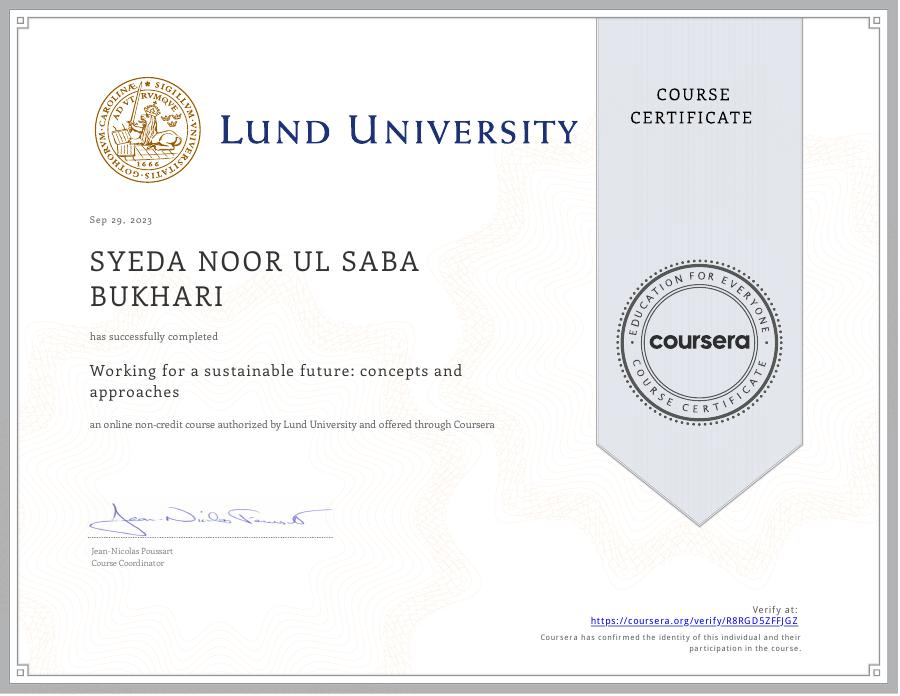
Completed September 29, 2023 · non-credit course
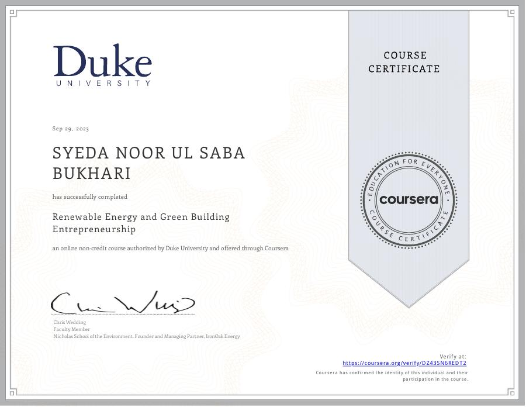
Completed September 29, 2023 · non-credit course
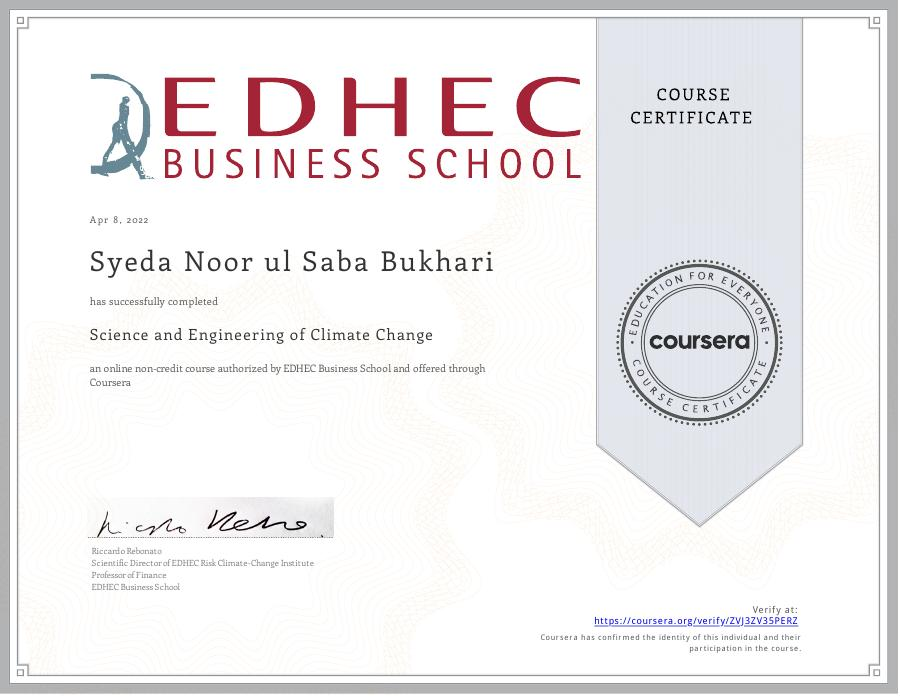
Completed April 8, 2022 · non-credit course
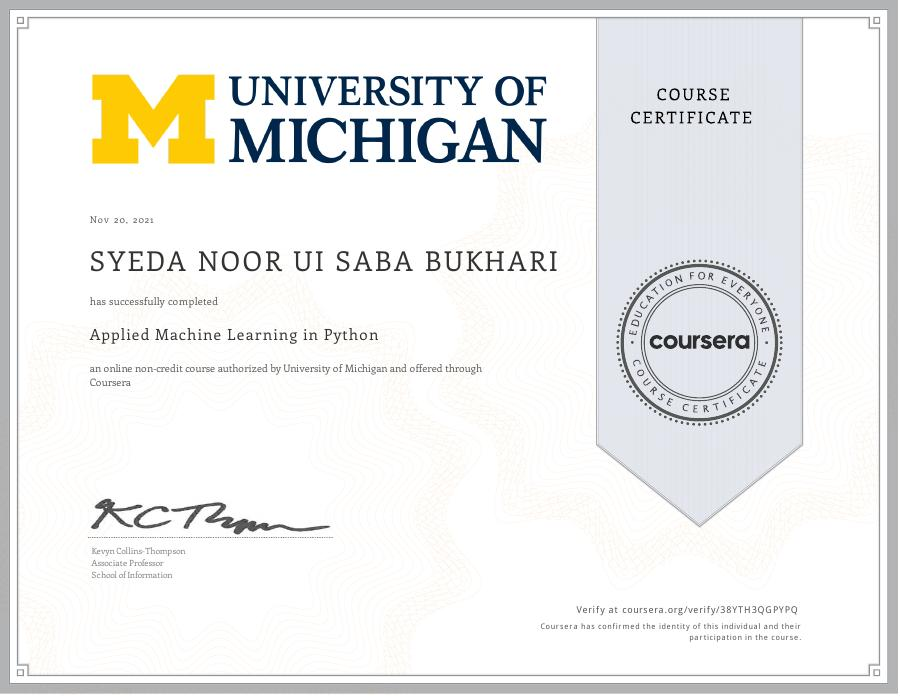
Completed November 20, 2021 · non-credit course
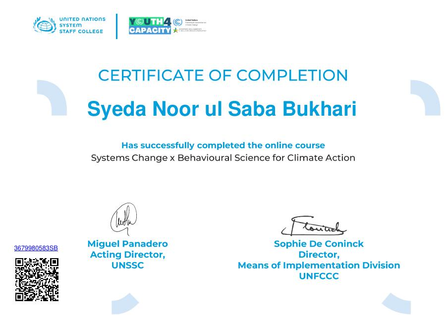
Certificate of completion
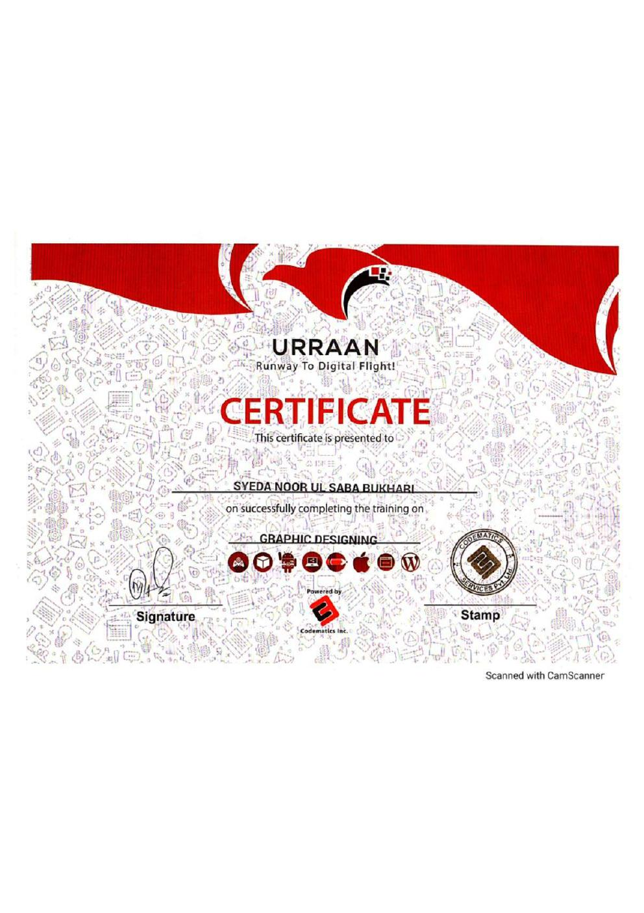
Certificate of successful completion of training in Graphic Designing.
A concise record of completed Esri learning activities, including scores where provided.
Includes Make an Impact with Modern Geo Apps, Getting Started with Data Management, Power Data-Driven Decisions with ArcGIS Dashboards, GIS for Climate Action, Going Places with Spatial Analysis, and ArcGIS Online Basics.
Cartographic principles and map communication.